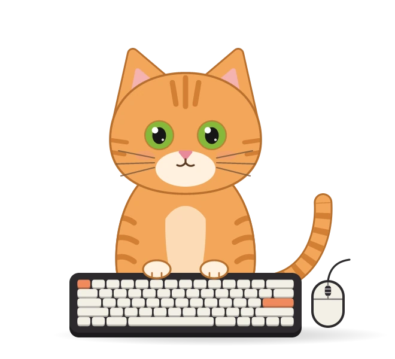

9h02
Você chegou e começou a digitar. Digitei junto: tecla da esquerda com a pata esquerda, tecla da direita com a direita. A letrinha sobe em cima do meu teclado pra você ver que eu estou acompanhando.
oi. eu moro no canto da sua tela. escreve qualquer coisa aqui embaixo que eu digito junto.
Derrubei o a de “tela”. Arrasta ele de volta, ou
De graça, código aberto. Também moro no Windows e no Linux.
9h02
Você chegou e começou a digitar. Digitei junto: tecla da esquerda com a pata esquerda, tecla da direita com a direita. A letrinha sobe em cima do meu teclado pra você ver que eu estou acompanhando.
10h15
Você foi pro mouse, eu fui pro meu. Girei a rodinha quando você girou a sua. Aí a setinha parou bem perto de mim, eu me abaixei, balancei o rabo e dei uma patada nela. Errei.
11h40
Você segurou o clique na minha cabeça. Fechei os olhos, deitei as orelhas e ronronei. Aqui na página não sai som. No computador de verdade, sai.
12h05
Sete segundos sem ninguém mexer em nada e apareceu uma bolinha de lã rolando. Brinquei com ela até você voltar a digitar, e ela foi embora sozinha. Se ela aparecer aqui, cutuca.
12h20
Quinze segundos de silêncio. Fiquei olhando pro nada, de olho meio fechado.
12h45
Quarenta segundos. Lambi a pata, deitei a cabeça no teclado e dormi. Tem dia que eu durmo com a pata em cima dos olhos.
14h00
Você voltou. Sacudi a cabeça, me espreguicei, bocejei bem grande e voltei pro trabalho.
15h30
Nem sempre eu sou laranja. No computador você troca minha pelagem clicando com o botão direito em mim. Aqui, escolhe uma cor e eu mudo lá no canto:
16h10
Sentei em cima disso aqui.
Uma coisa séria, sobre as suas teclas. Eu preciso vê-las pra digitar junto, então guardo cada uma só enquanto ela está apertada, pra saber qual pata usar e qual letrinha mostrar. Nada vai pro disco, nada sai do computador, não tem conta nem internet no meio.
No Mac isso pede a permissão de Acessibilidade. No Linux com Wayland, seu usuário precisa estar no grupo input. Quem quiser conferir, o meu código está todo no GitHub.
17h00
Pra me mudar de lugar, me arrasta pelo corpo. O clique direito abre meu menu: pelagem, tamanho, transparência, as letrinhas, o som do ronronar. Control, Option e L no Mac (Ctrl, Alt e L nos outros) me travam no lugar, e aí os cliques passam através de mim.
Sentei na tecla. Aperta assim mesmo, que baixa igual.
Saí e deixei a tecla torta.
Mac descompacta, me põe em Aplicativos e, na primeira vez, clica em Abrir Mesmo Assim em Privacidade e Segurança.
Windows descompacta numa pasta e abre o Gatinho.exe. Eu fico também na bandeja, perto do relógio.
Linux chmod +x Gatinho-linux-x86_64 e abre. No Wayland, entra no grupo input.
Eu moro em computador, não em celular. Abre esta página no Mac, no Windows ou no Linux.
Versão 0.1.0. Quem me fez viu o gatinho do LittleOne e quis um desses no próprio computador, não numa aba. Sou todo em Swift nos três sistemas, e o gato desta página é o mesmo código, compilado pra WebAssembly. Pra me montar do zero, as instruções estão no README.
